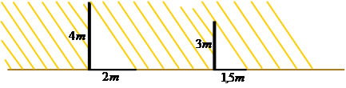
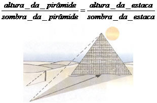
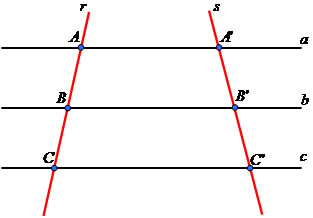
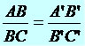
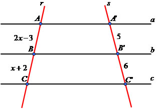
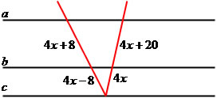
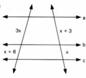
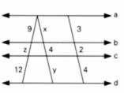
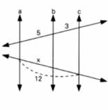
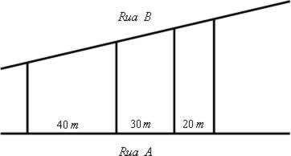

Tales de Mileto foi um immportante filósofo, astrônomo e matemático grego que viveu antes de Cristo. Ele usou seus conhecimentos sobre Geometria e
proporcionalidade para determinar a altura da pirâmide Quéops no Egito. Em seus estudos, Tales observou que os raios solares que chegavam à Terra
estavam na posição inclinada e eram paralelos, dessa forma, ele concluiu que havia uma proporcionalidade entre as medidas da sombra e da altura dos
objetos, observe a ilustração:

Com base nesse esquema, Tales conseguiu medir a altura de uma pirâmide com base no tamanho da sua sombra. Para tal situação ele procedeu da seguinte forma:
fincou uma estaca na areia, mediu as sombras respectivas da pirâmide e da estaca em uma determinada hora do dia e estabeleceu a proporção:

O Teorema de Tales pode ser determinado pela seguinte lei de correspondência:
“Feixes de retas paralelas cortadas ou intersectadas por segmentos transversais formam segmentos de retas proporcionalmente correspondentes”.
Para compreender melhor o teorema observe o esquema representativo a seguir:

Pela proporcionalidade existente no Teorema, temos a seguinte situação:

Exemplos:
1) Aplicando a proporcionalidade existente no Teorema de Tales, determine o valor dos segmentos AB e BC na ilustração a seguir:

AB = 2x – 3
BC = x + 2
A’B’ = 5
B’C’ = 6
AB/BC = A'B/B'C'
2x - 3 / x + 2 = 5/6
6.(2x - 3) = 5.(x + 2)
12x - 18 = 5x + 10
7x = 28
x = 4
AB = 2x – 3 → 2.4 – 3 = 5
BC = x + 2 → 4 + 2 = 6
2) Determine o valor de x na figura a seguir:

4x + 8 / 4x - 8 = 4x + 20 / 4x
4x(4x + 8) = (4x - 8).(4x + 20)
16x2 + 32x = 16x2 + 80x - 32x - 160
16x2 - 16x2 + 32x + 32x - 80x = -160
-16x = -160
x = -160/-16
x = 10
1) Sabendo que as retas a, b e c são paralelas, utilize o Teorema de Tales e determine o valor de x na figura a seguir:

2) Na figura a seguir temos que a // b // c // d. Aplicando o Teorema de Tales determine os valores de x, z e y.

3) Aplique o Teorema de Tales no intuito de determinar o valor de x, sabendo que as retas a, b e c são paralelas.

4) (Fuvest–SP) Três terrenos têm frente para a rua A e para a rua B, como na figura. As divisas laterais são perpendiculares à rua A.
Qual a medida de frente para a rua B de cada lote, sabendo que a frente total para essa rua tem 180m?

5) (Fuvest–SP) A sombra de um poste vertical, projetada pelo sol sobre um chão plano, mede 12 m.
Nesse mesmo instante, a sombra, de um bastão vertical de 1 m de altura mede 0,6 m. Qual a altura do poste?
1) Como o valor de x'' = - 1,5 não é interessante para nós, o único valor possível de x que satisfaz a proporção é x' = 6.
2) Solução: x = 6, z = 6 e y = 8.
3) O valor de x de acordo com o Teorema de Tales é 7,5.
4) Lote I: 80 metros Lote II: 60 metros Lote III: 40 metros
5) A altura do poste é correspondente a 20 metros.